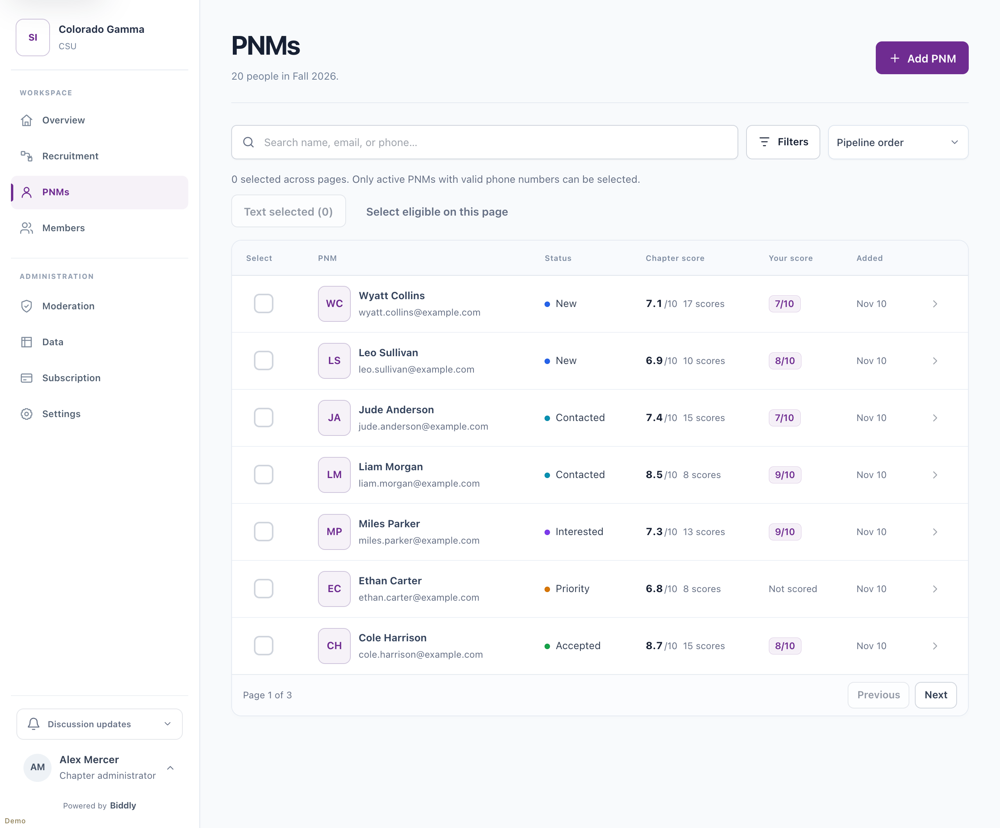
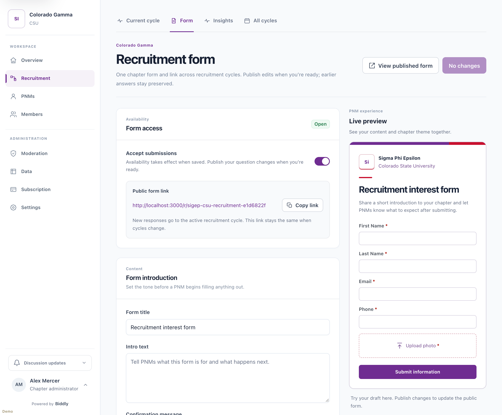

The problem
Recruitment involves coordinating people, conversations, feedback, and decisions across a chapter. I originally built Biddly for my fraternity chapter at Colorado State University to bring that work into one application.
The project grew into a commercial platform supporting multiple organizations, each with its own chapter workspace. I design, build, and maintain the product, including the recruitment interface, chapter administration, API, database, and subscription infrastructure.
What I built
The application gives chapter members and leaders a shared recruitment workflow:
- Candidate directory and profiles: searchable prospective members, recruitment stages, chapter scores, and individual evaluations.
- Chapter discussion: threaded replies, reactions, moderation, and feedback attached to the correct candidate.
- Recruitment cycles: configurable pipeline stages and preserved records from previous cycles.
- Public forms: configurable questions, required fields, and published form versions that preserve the context of earlier answers.
- Administration: invitations, member roles, CSV imports and exports, audit records, and paid subscriptions.

Engineering decisions
Permissions belong on the server
Organizations and chapters share the platform, so access boundaries are part of the data model and API. Chapter permissions are enforced server-side, and recruitment records stay associated with their cycle.
Shared contracts between the interface and API
The web application and API live in one TypeScript codebase. Shared Zod validation schemas define the accepted inputs, so both sides use the same rules. The Next.js frontend and Fastify API use a common definition of application inputs.
Preserve history as workflows change
Recruitment cycles retain previous activity, while published form versions keep earlier submissions tied to the questions originally asked. Chapter configuration can evolve without mixing past and present records.
| Layer | Technology | Responsibility |
|---|---|---|
| Web application | Next.js, React, TypeScript | Recruitment workflows, administration, public forms |
| API | Fastify, Zod | Validated requests, authentication, chapter permissions |
| Data | PostgreSQL, Prisma | Workspaces, cycles, evaluations, discussions |
| Subscriptions | Stripe | Paid plans and billing lifecycle |
| Development | pnpm, Turborepo, Docker, Playwright | Workspace builds, local development, browser checks |

Usage & verification
More than 340 people have used the platform.
Automated checks cover application types, API behavior, configuration, and browser workflows. The project uses Playwright for end-to-end browser checks.
The commercial application’s source is private. The public showcase documents the product, screenshots, architecture, and my ownership of its implementation.
Project documentation
The public repository includes a broader product tour and the technical overview.